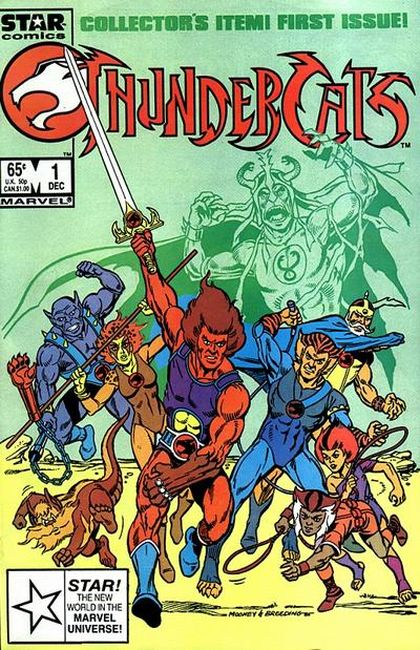

ThunderCats is an American franchise featuring a fictional group of catlike humanoid aliens.
The characters were created by Tobin "Ted" Wolf and originally featured in an animated television series named ThunderCats, running from 1985 to 1989, which was animated by Japanese studio Pacific Animation Corporation, and co-produced by Rankin-Bass Animated Entertainment.
On July 29, 2011, a second television series of the same name premiered. It was initially planned to have a 52-episode long first season, but it was shortened down to 26 and cancelled shortly after season one finished airing. It later had reruns on Adult Swim's Toonami block alongside Sym-Bionic Titan.
1985 Animation Plot:
ThunderCats follows the adventures of the eponymous team of heroes, cat-like humanoid aliens on a planet called Third Earth. The series plot begins with the dying planet Thundera meeting its end, forcing the ThunderCats (a sort of Thunderean nobility) to flee their homeworld.
The fleet is attacked by the Thundereans's enemies, the Mutants of Plun-Darr, who destroy most of the starships in the "ThunderFleet," but spare the flagship hoping to capture the legendary mystic Sword of Omens they believe is on board. The sword holds the Eye of Thundera, the source of the ThunderCats's power, which is embedded in the hilt.
Though the Mutants damage the flagship, the power of the Eye drives them back. The damage to the ship means the journey to their original destination is not possible, instead having to journey to "Third Earth;" which will take much longer than they had anticipated.
The eldest of the ThunderCats, Jaga, volunteers to pilot the ship while the others sleep in capsules; however, he dies of old age in the process, but not before ensuring they will reach their destination safely. The flagship contains the young Lord of the ThunderCats, Lion-O, as well as the ThunderCats Cheetara, Panthro, Tygra, WilyKit and WilyKat, and Snarf.

"Survival Run!" Written by David Micheline. Art by Jim Mooney and Brett Breeding. When the Thundercats' homeworld is destroyed, a small group of survivors crash-land on the mysterious green world known as Third Earth. They soon find themselves in a desperate fight for survival against their mortal enemies the Mutants. However, things go from bad to worse when their battle with the vile Mutants awakens Mumm-Ra, an ancient ogre-mage whose dark magic powers know no rival.